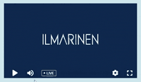

Toimii parhaiten Google Chromella. Videon viive on noin 10
sekuntia.
Jos olet ollut jo pidempään odottamassa linjoilla käy ensin virkistämässä selainikkuna.

Laita videon äänet päälle. Ääninappula löytyy
videoikkunan vasemmasta
alakulmasta, joten vie hiiri sen päälle ja paina kaiuttimen kuva.
Yhteys pätkii. Muuta videosoittimen hammasrattaan takana
oleva Quality
pienemmälle. löytyy videoikkunan vasemmasta
alakulmasta.
Yritys VPN-ratkaisut saattavat estää videon
katselun sekä chatin
näkymisen. Voit seurata webinaaria myös mobiililaitteella.